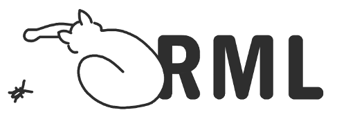

Viviana Mascardi
Contact details
DIBRIS - Dipartimento di Informatica, Bioingegneria, Robotica e Ingegneria dei Sistemi
Via Dodecaneso, 35, 16146 Genova - ITALY
.png)
Phone: +39 010 3536664
Email address: viviana.mascardi@unige.it
Married to Davide Ancona, mother of Samuele, Simone and Micol
- , the Runtime Monitoring Language: a system agnostic domain specific language for runtime monitoring and verification
- DigForASP, DIGital FORensics: evidence Analysis via intelligent Systems and Practices. COST action. Start: 2018. End: 2022. Role: WG4 leader.
- SAFEPOST: Reuse and development of Security Knowledge assets for International Postal supply chains. FP7 project. Total budget: 14.986.407 Euro. UO Budget: 255.600 Euro. Start: 2012. End: 2016. Role: Participant.
- Indiana MAS and the Digital Preservation of Rock Carvings, A multi-agent system for drawing and natural language understanding aimed at preserving rock carvings. Role: Principal Investigator. MIUR FIRB 2010 (National Funding). Total budget: 747.600 Euro. UO Budget: 381.100 Euro. Start: 2012. End: 2015. Role: Principal Investigator